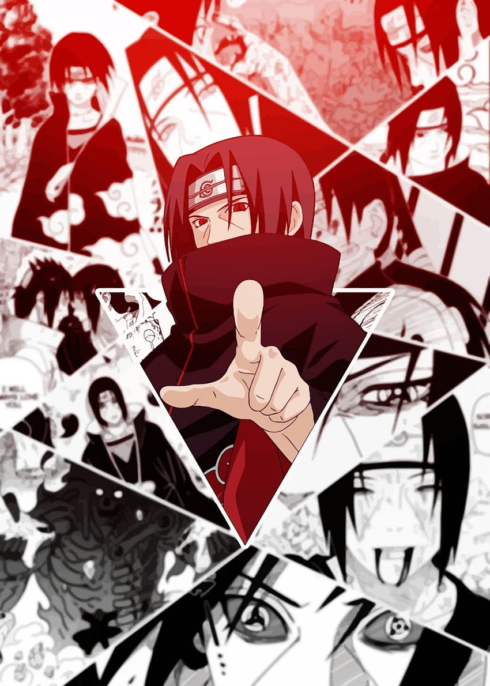

The Child Who Sacrificed Himself to Solve Adult Problems
Itachi Uchiha (うちはイタチ|Uchiha Itachi) is a major character and an anti-villain in the Naruto franchise.He is an ANBU Captain and a prodigy from Konohagakure's famed Uchiha clan, the son of Fugaku Uchiha, the clan's chief, and Mikoto Uchiha, and the older brother of Sasuke Uchiha. He is also the brother-in-law of Sakura Haruno, and the paternal uncle of Sarada Uchiha.
As a true tragic hero, Itachi Uchiha does not lack his virtuous and sympathetic traits and ambitions, despite all the horrors the did and endured throughout his life. He sacrificed everything for his brother Sasuke and his village, inclusively his chances at love.Itachi awakened the special power of the Uchiha, known as the Sharingan, at quite the young age of 8. Soon after, he went on to master this eye to a great degree and earned the admiration of some of the most incredible shinobi, such as Orochimaru.

Itachi Uchiha (うちはイタチ|Uchiha Itachi) is a major character and an anti-villain in the Naruto franchise.
He is an ANBU Captain and a prodigy from Konohagakure's famed Uchiha clan, the son of Fugaku Uchiha, the clan's chief, and Mikoto Uchiha, and the older brother of Sasuke Uchiha. He is also the brother-in-law of Sakura Haruno, and the paternal uncle of Sarada Uchiha.
He became an S-rank missing-nin as he participated in the murder of his entire clan, defected from the village, then joined the criminal organization Akatsuki. This causes Sasuke to desire revenge at any cost and later turn to Orochimaru while seeking the power to kill his older brother, making Itachi indirectly responsible for Sasuke's turn to villainy. Because of the Uchiha clan massacre, Itachi was vilified and served as a supporting antagonist for a large part of the series (until his death). However, after Itachi died out of sickness during the fight against Sasuke, it is revealed that Itachi was actually a double-spy that killed his clan on orders from higher- ups.